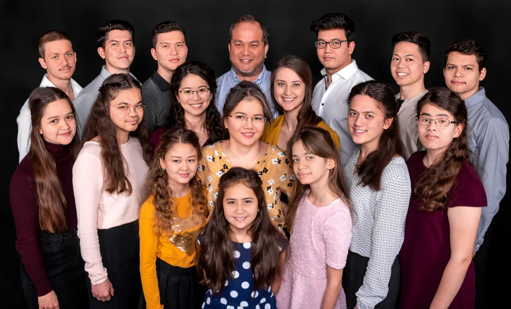
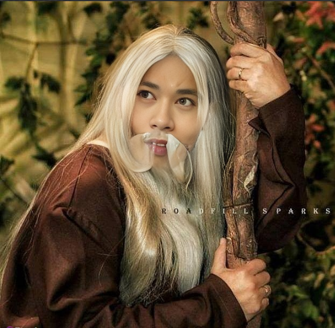

Magiting Moments
Home
Magiting Moments
Unang Paglaban sa Kalaban
4 Million B.C.
Unang Nakasagupa ng ating lider si Ben Tulfo, dito ay pinamalas ni Lider ang kanyang galing sa pag hiwa ng patola. Ginamit niya ang sandatang kahit hindi matulis, nakakahiwa.
Unang PagIbig
3 Million B.C.
Dito ay nakilala ng ating Lider ang kanyang unang pag-ibig na si ALL AN galing sa Tribo Mindanao. Sila ay nagpakasal ang nagkaroon ng 25 na anak
Unang Anak
2 Million B.C.
Sa tindi ng kanilang pagmamahalan, ito ay nagbunga at pinanganak nila ang kanilang kambal na panganay na si Tochiro Sasaki at Hitochi Kikisa.
Unang pagkabigo sa Pagibig, Pangalawang Asawa at Sumunod na Anak
1.8 Million B.C.
Matapos ang ilang taon na dumaan, nauwi din sa hiwalayan ang pagsasama ni Pinuno at ALL AN. Nahuli ni Pinuno si ALL AN na may kasiping na isang lalaki, hindi ito matanggap ni pinuno at inutusan ang mga katribo na siya ay putulan ng itlog at palayasin.
Matapos lumayas ni ALL AN sa Tribo, dumating naman ang hindi inaasahan ni Pinuno. Isang magiting na mandirigma galing sa Sitio Bangungot. Si Jey Si, nahulog agad ang loob ni Pinuno at sila ay gumawa ng bata.
Isinilang si Den Den, ang unang anak ni Pinuno kay Jey Si. Lumaking Maldita si Den Den at hindi ito ikinatuwa ni Pinuno kaya't sa kanyang ama ito nag labas ng sama ng loob. Pinadampot niya si Jey Si at itinali sa Puno ng Makopa para gulpihin. Pinaghahampas ng Dahon ng malunggay ito ng mga alagad ni Pinuno. Hindi kinaya ni Jey Si ang sakit at ito ay agad na pumanaw.
Nalaman ni Den Den ang sinapit ng kanyang ama at ito ay sumigaw ng pabulong. Hindi niya kinaya at siya ay naglayas ng walang medjas.
Ikatlong Pag-Ibig
1.5 Million B.C.
Nagsisi si Pinuno sa kanyang nagawa, hindi niya napatawad ang kanyang sarili kaya sa loob ng 300K years, hindi ito lumabas ng banyo. Pero isang araw, may dumating na bisita si Pinuno, isang magiting na mandirigma galing Baryo Tomador.
Siya ay si Peliks KatBa, nalaman niya na walang kasalukuyang kasintahan si Pinuno kaya agad agad siyang naglakbay para puntahan ito.
Nung una ay hindi siya pinapansin ni Pinuno dahil masama padin ang kanyang loob sa nagawa niya sa kanyang mag-ama. Pero kalaunan ay naging marupok ito at kinilig ng ilabas ni Peliks ang kanyang Matabang Alaga. Isang Kuto pala ang pinakita niya kay Pinuno at agad namang ngumiti ito.
Matapos ang ilang daang libong taon ay nagkatuluyan sila at nagkaanak pa ng 15.

Digmaang Pangkalawakan
1.2 Million B.C.
Habang nanahimik ang mundo, nagulantang ang lahat ng biglang pagsugod ng mga halimaw na nag mula sa ibang planeta.
Sa kasamaang palad, nadamay at nasaktan ang ilang anak ng ating lider. Dahil dito, nag ensayo ang ating lider para ipaghiganti ang kanyang mga anak at nakilala niya ang isang ermitanyo. Siya ay si Ka Jeren, nagmula sa bayan ng Dagupan kung saan nakikita ang mga bangus na walang buto.
Ang ermitanyong ito ang nagbigay sa ating lider ng kapangyarihan na kayang lumaban sa mga halimaw, binigyan niya ng hiyas si pinuno
Hiyas mula sa karagatang pantropiko. Ginamit ito ng ating lider para sugpuin ang mga kalaban. Sa una mahirap dahil kada gamit ng hiyas ng ating lider, siya ay kailangang dumumi ng 15 times dahil hindi niya pa kontrolado ang kapangyarihan na ito.
Pero nagamay din ito ni pinuno. Nilabanan niya lahat at inubos ang halimaw. Nagwagi ang mga tao at malaking pasasalamat nila kay Pinuno.
Makalumang Pagibig
1 Million B.C.
Ilang daang milyong taon lumipas makatapos ang digmaan,
Sa hindi inaasahang pagkakataon, nasawi si Peliks Katba dahil sa matinding sakit mula sa langgam. Dinamdam ito ng ating lider at hindi kumain ng 20 minutes.
Dito bumalik ang tumulong sa ating pinuno na si Ka Jeren, pero nagulat si Pinuno ng biglang nagbago ang anyo ng ermitanyo at naging gwapong binata. Kinilig dito si Pinuno at biglang sumampa sakanya
Nagkatuluyan ang dalawa at nagpakasal sa Pari ng Tondo na si Mang Gie
Nagsama sila ng matagal at nagbunga ng 11 na anak. 4 na panganay at 7 bunso
